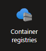

This assignment is designed to introduce you to Identity Managament and IAM Roles, covering the setup of a WebApp and a Container Registry (ACR), configuration, and basic management of apps' identity and roles to connect both services. By the end of this assignment, you will understand how to connect at least two Azure services to allow them to communicate.
Navigate to your Azure portal and login.
Name your resource group simpleAppRG
Go to App Services and create a new Web app. Set the following configurations:
simple-app.Container.Go to the Next step, configure the container:
Quickstart (default option).Question: Wait few minutes then visit the URL of your WebApp, what do you see? Check the logs in the Deployment center to inspect what happened.
Look for Container Registries service and create a new Registry.

Use the following configuration:
appsRegistry.Review + create and create your registry.Question: What's a container registry?
First, let's create a simple app. On your computer:
mkdir ~/simple-app
cd ~/simple-app
main.py with the following FastAPI code:from fastapi import FastAPI
app = FastAPI()
@app.get("/")
async def root():
return {"message": "Hello, Azure!"}
Feel free to update this app! Show me your creativity :)
Dockerfile. In the simple-app directory, create a file named Dockerfile with the following content:# Use an official Python runtime as a parent image
FROM python:3.9
# Set the working directory
WORKDIR /app
# Copy the current directory contents into the container at /app
COPY . /app
# Install FastAPI and Uvicorn
RUN pip install fastapi uvicorn
# Make port 8080 available to the world outside this container
EXPOSE 8080
# Run app with Uvicorn on container startup
CMD ["uvicorn", "main:app", "--host", "0.0.0.0", "--port", "8080"]
docker build -t fastapi-app .
docker run -d -p 8080:8080 fastapi-app
Navigate to your appsRegistry resource. In "Overview", look for "Get Started" -> "Push an image".
Follow the steps to understand the example. After the step 4, navigate to "Repositories", what do you see?
Now using the same steps to push your local Docker image to your ACR registry. Push the image to simpleApp repository.
Questions: Why did you have to run az acr login command? What does the step 3 do? What about step 4?
You need to allow your WebApp to pull images from ACR in order to deploy it.
Identity.Questions:
System Identity and User Identity?Your WebApp doesn't have any role assignement for the moment, so technically, it can't access anything.
The WebApp needs access to ACR to pull the latest image of the app you pushed and deploy it. Let's grant it the permission:
appRegistry and look for "Access Control (IAM)".AcrPull and click on Next.Note: A rule to always have in mind when you use the cloud: always give users and applications the least privileges. It is for security reasons, the less you open your gates the safer it is.
Questions: Go back to your WebApp and check "Azure role assignments" again, what do you see?
All permissions granted, now make the WebApp deploy the image you just pushed to the registry.
appRegistry.simpleApp.latest.Wait few minutes and visit the URL of your WebApp, you may need to restrat the app.
Question: What did you understand from this assignement?
Use the website you developed in previous assignements to create a Docker image and push it to ACR. Then, deploy the app to a WebApp (as in Task 1).
Try to give a unique name for yoru WebAppp anddeactivate the Unique default hostname (preview) on option (e.g., you can try: <name_oo_your_app>_your_name).
Once deployed, ask your classmate to visit your website!
az acr login command was successful.acrpull role to the service principal.az webapp log tail to see real-time logs.